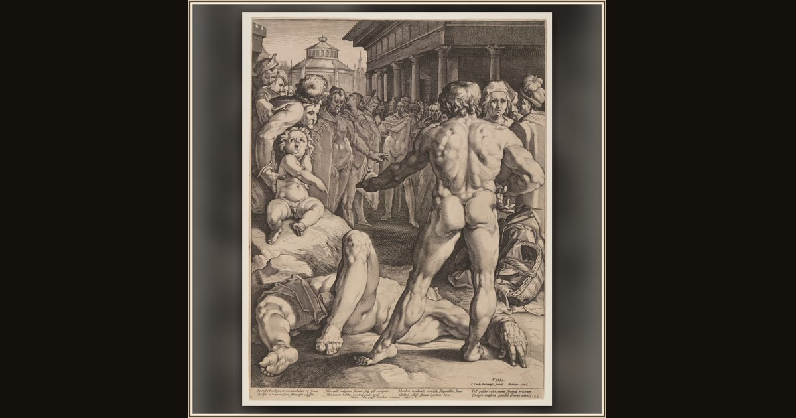

Fight between Ulysses and Irus
Jan Harmensz Muller (Dutch, 1571–1628), after Cornelis van Haarlem (Dutch, 1562–1638) · 1589 · The Art Institute of Chicago · Chicago, USA
Disguised as a beggar in his own hall, Odysseus is challenged to a fight by the bully Irus — and wins it with a single blow. Explore its place in Book XVIII of the Odyssey.